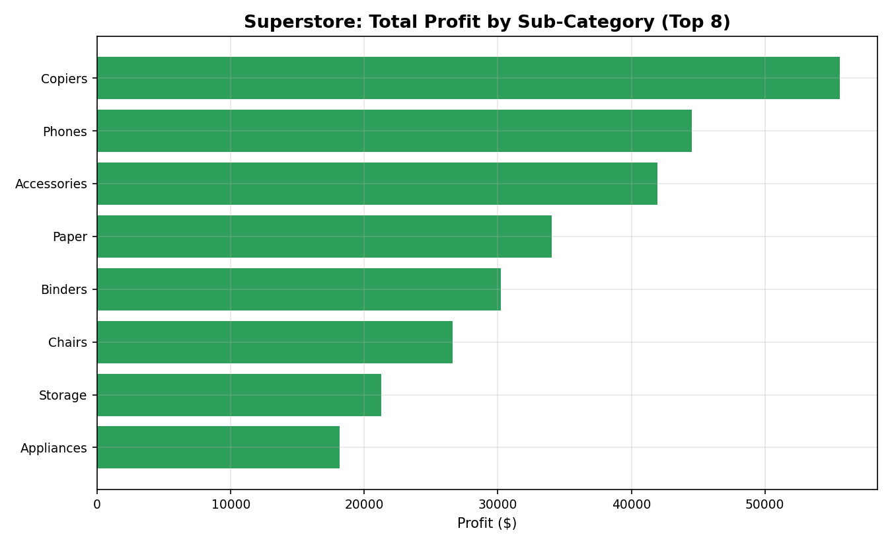
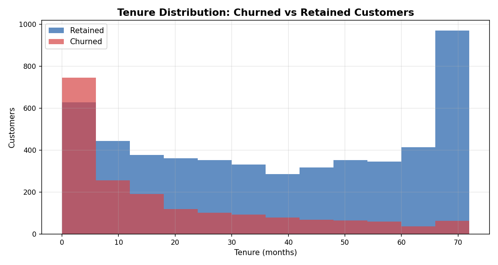
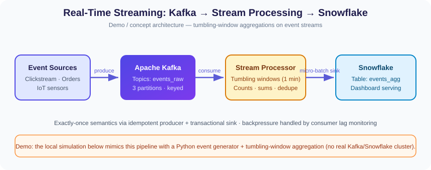

+20%
forecast and planning accuracy
Data, engineered beautifully.
Senior Data Analyst · Building toward Data Engineering & Data Science
I lead analytics from ambiguous business question to trusted decision—partnering across Finance, Sales, Sales Operations, and Global Operations to improve forecasting, performance visibility, and operating discipline.
Data Analyst with a proven track record across 6+ years in analytical roles, showcasing expertise in end-to-end analytics processes within Finance, Sales, Sales Operations, and Global Operations. Proficient in Power BI, DAX, SQL, Python, Microsoft Excel, Statistics, and data modeling for comprehensive data analysis and visualization. Comfortable with end-to-end data analysis, data processing, KPI dashboard creation, forecasting, and presenting actionable insights with effective communication and engaging story-telling skills.
A deliberate progression from trusted analysis, through production-minded data engineering, toward applied data science.
6+ years of business analytics, forecasting, KPI governance, and seven real-data portfolio projects.
Streaming, orchestration, warehouse, and lakehouse patterns across the four demos below.
Applied classification, regression, and model evaluation across three focused demos with real run metrics.
A practical analytics toolkit spanning dashboard delivery, data preparation, modeling, and cross-functional implementation.
Explore finance, retail, customer, demand, and economic data through interactive executive dashboards—plus the runnable ETL pipeline behind the diamond pricing work. Every figure comes from reproducible Python/pandas analysis of a cited public dataset.
01 · FINANCE ANALYTICS · 2015-02-17 TO 2017-02-16
An end-to-end analysis of Apple Inc. stock performance from 2015 to 2017 to uncover what really drives returns — evaluating daily price action, trading volume patterns, and the asymmetry between winning and losing days. This analysis revealed that only 49.9% of days closed up, yet total return reached +10.1%, proving gains came from magnitude, not frequency — a key insight for timing and risk decisions.
Tools: Python (pandas, matplotlib)
Analysis: EDA, Time Series Analysis, Return & Volume Analysis
Source: plotly/datasets · 506 rows × 11 columns · Python/pandas analysis
02 · PRODUCT ANALYTICS · RETAIL PRICING
A project uncovering what truly drives diamond prices across 53,940 stones — analyzing the interplay of carat, cut, color, and clarity to find pricing patterns and market surprises. This analysis revealed a striking composition effect: Ideal-cut diamonds show the lowest median price ($1,813) not from lower quality, but because they skew smaller — with carat alone correlating 0.922 with price.
Tools: Python (pandas, matplotlib)
Analysis: EDA, Correlation Analysis, Segmentation
Source: seaborn-data · 53,940 raw rows × 10 columns · 53,775 rows after production cleaning
03 · DEMAND PLANNING · 1949–1960
An end-to-end time series analysis of airline passenger demand from 1949 to 1960 to quantify growth and seasonality for capacity planning. This analysis measured 275.9% total growth at a 12.8% CAGR, with a 50.9% seasonal swing between July peaks and November troughs — the foundation of a reliable demand forecasting model.
Tools: Python (pandas, matplotlib)
Analysis: EDA, Time Series Decomposition, Seasonality Analysis
Source: seaborn-data · 144 monthly observations · Python/pandas analysis
07 · DATA ENGINEERING · PYTHON → SQLITE
An end-to-end data engineering project building a real ETL pipeline: extracting raw diamond data, transforming and validating it through 19 data-quality checks, and loading it into a SQLite warehouse. This pipeline refined 53,940 raw rows into a trusted 53,775-row dataset with 19/19 quality checks passing.
Tools: Python, SQLite
Analysis: ETL, Data Quality Checks, Data Modeling
CSV · 53,940 rows × 10 columns
Type coercion, dedupe, category standards, quarantine, price_per_carat and volume_mm3
19 null, duplicate, range, dimension, and category checks
SQLite fact, aggregate mart, DQ report, and quarantine audit
Last analyzed: 2026-09-24 · Python 3.12 · pandas 2.1.4 · SQLite
04 · RETAIL ANALYTICS · 2015-01-03 TO 2018-12-30
An end-to-end retail analytics project diagnosing profitability across $2.3M in sales to find where margin is won and lost. This analysis exposed that over-discounting destroys margin — loss-making orders averaged 48.1% discount versus 8.1% on profitable ones — and that Technology earns a 17.4% margin while Furniture earns just 2.5%, guiding pricing and assortment strategy.
Tools: Python (pandas, matplotlib)
Analysis: EDA, Profitability Analysis, Discount Impact Analysis


Source: leonism/sample-superstore · 10,800 rows × 21 columns · Python/pandas analysis
05 · CUSTOMER ANALYTICS · RETENTION
A project focused on predicting and reducing customer churn for a telecom company by identifying the strongest churn drivers across 7,043 customers. This analysis found month-to-month contracts churn at 42.7% versus 2.8% for two-year contracts, and electronic-check payers churn at 45.3% — clear levers for a targeted retention strategy.
Tools: Python (pandas, matplotlib)
Analysis: EDA, Driver Analysis, Segmentation

Source: IBM Telco Customer Churn · 7,043 rows × 21 columns · Python/pandas analysis
06 · ECONOMIC TIME SERIES · 1948 TO AUG 2026
A macroeconomic time series analysis of US unemployment from 1948 to the present to understand labor-market cycles and shocks. This analysis captured the COVID spike from 3.6% to 14.8% in just four months — followed by the fastest recovery on record — against a long-run average of 5.65%.
Tools: Python (pandas, matplotlib), FRED data
Analysis: EDA, Time Series Analysis, Cycle Analysis

Source: Federal Reserve Bank of St. Louis, FRED UNRATE · 944 rows · analyzed through Aug 2026
These are web-native interactive dashboard views, not Power BI .pbix files. Each project cites its source; the ETL artifacts are linked directly for inspection.
Explore the architecture, code patterns, and captured run output for each concept. These are clearly scoped demos—not production deployments—and are designed to show how I reason about scale, reliability, orchestration, modeling, and observability.
Keyed event ingestion, tumbling-window aggregation, deduplication, and an analytics-ready sink.

events_raw.producer = KafkaProducer(
enable_idempotence=True,
acks="all"
)
producer.send(
"events_raw",
key=event["customer_id"],
value=event
)for event in events:
window = floor_to_minute(event["event_time"])
if event["event_id"] not in seen:
windows[window]["count"] += 1
windows[window]["revenue"] += event["amount"]window 01 events=400 revenue=$105,643.55 window 02 events=400 revenue=$97,366.83 window 03 events=401 revenue=$100,992.50 window 04 events=400 revenue=$102,448.00 window 05 events=399 revenue=$96,819.50 Duplicates skipped: 0 · simulated Snowflake commit: complete
A retry-aware daily DAG orchestrating bronze-to-silver processing, warehouse load, and hard DQ gates.

warehouse.fact_orders.DEFAULT_ARGS = {
"retries": 2,
"retry_delay": timedelta(minutes=5),
"sla": timedelta(hours=2)
}
extract_orders >> run_databricks >> load_warehouse >> data_qualitysilver = bronze.dropna(subset=["order_id"])
silver = silver.sort_values("order_ts") \
.drop_duplicates("order_id", keep="last")
silver["line_total"] = (
silver["quantity"] * silver["unit_price"]
).round(2)extract_orders DONE — bronze landing: 1,202 rows
run_databricks DONE — silver: 1,199 rows
dropped_no_key=1 · deduped=2
load_warehouse DONE — fact_orders: 1,199 rows
data_quality PASS — all 4 gates
DAG status: SUCCESS · 0.72s local simulationA layered ELT design that keeps raw data replayable and moves tested business logic into version-controlled models.
ref().with source as (
select * from {{ source('raw', 'orders') }}
)
select order_id, customer_id,
cast(order_ts as timestamp) as order_ts,
cast(quantity as integer) as quantity
from source
where order_id is not null and quantity > 0with orders as (
select * from {{ ref('stg_orders') }}
)
select order_date, count(*) as order_count,
round(sum(quantity * unit_price), 2) as gross_revenue
from orders
group by order_datesource raw.orders 63 rows · landing untouched model stg_orders 61 rows · 2 invalid filtered model mart_revenue 5 rows · one per order date 2026-09-23 13 orders · $4,495.35 2026-09-24 10 orders · $2,026.48 dbt run: OK — 2 / 2 models built
An immutable raw zone, partitioned curated layer, and two-speed serving pattern for scalable analytics.
curated = (
raw.withColumn("order_date", to_date(col("order_ts")))
.dropna(subset=["order_id"])
.dropDuplicates(["order_id"])
)
(curated.write.mode("overwrite")
.partitionBy("year", "month", "day", "region")
.parquet(curated_path))CREATE EXTERNAL TABLE spectrum.orders (...)
STORED AS PARQUET
LOCATION 's3://lake/curated/orders/';
CREATE MATERIALIZED VIEW bi.orders_by_region AS
SELECT region, COUNT(*) orders, SUM(line_total) revenue
FROM spectrum.orders GROUP BY region;RAW 502 records · immutable landing CURATED 494 rows · 6 null keys dropped · 2 duplicates removed SERVING 4 rows · revenue by region South 134 orders · $51,863.44 Central 115 orders · $48,065.55 Lakehouse promotion complete (simulated)
Scope note: each project is a local demo or architecture concept. The diagrams, sample code, and simulation outputs demonstrate engineering decisions and reproducible patterns; they do not represent a deployed production system or claim enterprise-scale usage.
A focused learning portfolio across imbalanced classification, churn modeling, and regression. Every result below comes from a completed local training or analysis run; each card names the production upgrade path where the demo uses a lighter baseline.
Detect rare fraud under extreme class imbalance and measure the cost of increasing recall.
0.7273 F1with SMOTESMOTE catches substantially more fraud, while lowering precision and increasing false alarms—a genuine operating-threshold tradeoff rather than a one-number win.
Methods: Classification, Imbalanced Learning
Predict service cancellations and surface the customer signals behind the score.
0.8355 AUCchurn-class F1 0.5764A HistGradientBoosting model provides a LightGBM-style baseline. Permutation importance—not SHAP—identified no dependents and no online security as the leading drivers.
Methods: Gradient Boosting, Feature Importance
Estimate California housing values with engineered density and household features.
$63,831 RMSE5-fold CV · R² 0.6695Feature engineering added rooms per household, bedrooms per room, and population per household before gradient-boosted regression and five-fold evaluation.
Methods: Regression, Feature Engineering, Cross-Validation
Scope note: these are portfolio demonstrations built from real public datasets and captured model runs. They show applied learning and evaluation—not production deployment or client delivery.
Helmitin Inc.
Own end-to-end KPI analytics across U.S. and Canadian operations, translating leadership questions into Power BI and Excel reporting, DAX measures, forecasts, and what-if scenarios while strengthening data trust and metric consistency.
Hyundai Mobis
Led demand-planning analytics and reporting automation, improving planning accuracy by 20%, reducing forecast discrepancies by 30%, and cutting recurring reporting effort by 40%.
Crystal Fountains Inc.
Led KPI standardization and management insight delivery, giving stakeholders a clearer, more consistent view of operational performance.
Sheridan College
Owned reporting and planning improvements that increased planning efficiency by 20% and reduced reporting turnaround by 40%.
Groupon
Partnered with business stakeholders to support decisions through structured analysis and forecast validation.
For analytics, reporting, and data-focused opportunities, reach out by email or connect with me on LinkedIn.